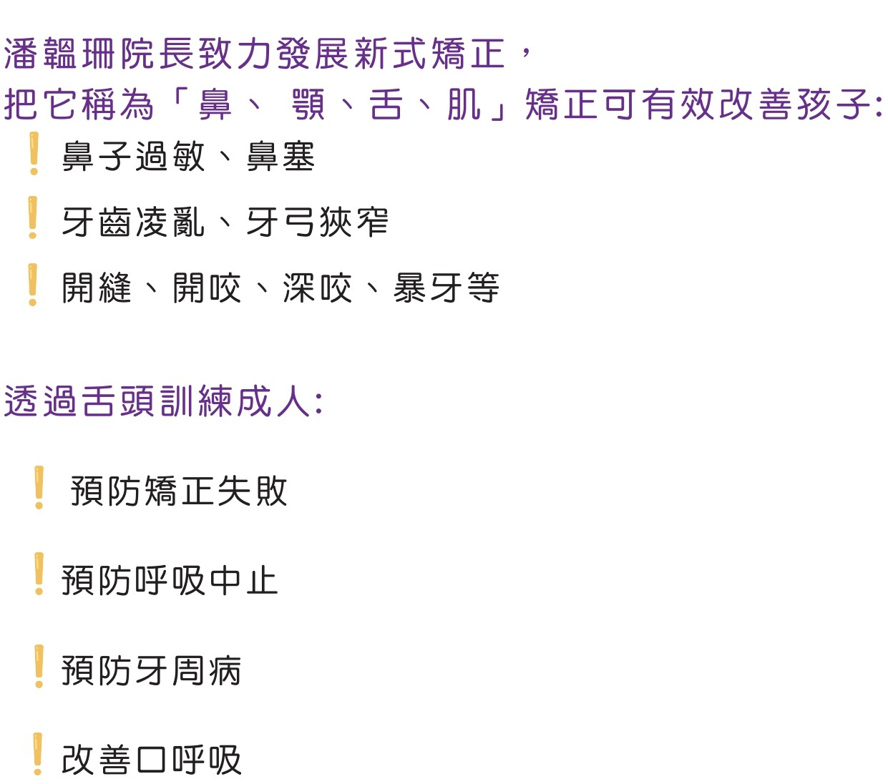

為什麼6到10歲是兒童矯正『超級黃金期』？
此時矯正牙弓使牙齒咬合緊密，可增加腦部血流量，促進掌管記憶的海馬迴生長，提升記憶力及學習集中力。
6-10歲為混合齒列期，有口呼吸及吞嚥方式不正確的孩子，會出現牙亂暴牙/牙開縫等問題
導致孩子不愛笑，生出自卑心，影響社交。
且有效改善孩子鼻子過敏、鼻塞等問題。
.png)
為何要做新式兒童矯正？
新式兒童矯正能有效改善 [鼻、耳、舌、肌]
幫助孩子從小建立整體健康基礎
現在就一起了解 [整體醫學新知]！
從嬰兒時期開始，一旦使用錯誤的吞嚥模式來吸奶，便易形成「口呼吸」習慣，故容易「鼻子過敏」，混合齒列期 6到12歲，看到「牙齒開始凌亂/暴牙/開缝」，青春期「牙齒凌亂/開缝/暴牙」更加明顯，不愛笑，生出自卑感，影響社交 。
因「鼻子過敏越加嚴重」造成睡眠時長期血氧降低而睡眠不好，加上咬合不良，同時影響腦部發育，皆影響學習集中力下降！
咬合良好的小朋友會增加腦部血流量，促進掌管記憶的海馬迴生長，提升學習記憶力，腦部發育10歲差不多定型，故切勿錯過治療牙齒的黃金期！
且不少小朋友因此「鼻子比較不挺拔」，但不是絕對。
成人時，因舌頭肥大無力，導至吞嚥時「只能」頂到牙齒才能順利吞嚥，而成人一天吞口嚥「超過1000次」，十年可達三百六十五萬次，最後導致牙周病的發生！
在我的門診中，幾乎90%牙病患者都會有口顎功能異常的問題！
此外，如果天生「舌繫帶過短」，吞咽嚥時，舌頭根本無法往上顎(硬顎)的方向「頂」產生封閉效應(負壓)，因爲有如舌頭被一條緊緊且短的繩子綁在下顎口底處，吞口水的時候就沒有辦法順利的往上封閉，只能往前頂著牙齒封閉來產生負壓，得以順利吞嚥。
門診中，我經常告知患者要「先」做舌繫帶(雷射)處理(不流血不疼痛)，就是這個原因！
第二，一直被限制的舌頭自然就不會有力量往上抬，故同時「需」訓練舌頭的肌力：一.要讓舌頭有力量，二.舌頭要瘦身。
因爲肥大又無力的舌頭，它是沒辦法往上顎方向封住產生封閉效應的(利用負壓方便吞嚥。)而且往往睡覺時「打呼」、「阻塞型呼吸中止」這些症狀都跟「舌頭肥大而無力」有非常密切的關係！
嚴重的是，許多人根本不知道原來舌頭要放在上顎吞嚥，而平常休息的時候，舌頭更不可以放在下顎靠近牙齒處，要頂住上顎休息，這也是許多患者完全不知道的正確口腔休息位置及良好習慣。
新式矯正器
法國矯正器
-
- Earth
- 3d
澳洲矯正器
-

- Pakistan
- 4d
日本矯正器
-
- California
- 5d
「錯誤的吞嚥模式」會產生什麼樣的副作用呢？
正確吞嚥是舌頭每一次封閉的時候，都是舌頭頂口腔上方硬顎處產生完全的封閉效應。
反之，錯誤的吞嚥模式多是舌頭往牙齒方向推擠，來產生封閉的負壓效應，方便吞嚥。 看詳文
從嬰兒時期開始，一旦使用錯誤的吞嚥模式來吸奶，便易形成「口呼吸」習慣，故容易「鼻子過敏」，混合齒列期 6到12歲，看到「牙齒開始凌亂/暴牙/開缝」，青春期「牙齒凌亂/開缝/暴牙」更加明顯，不愛笑，生出自卑感，影響社交 。
因「鼻子過敏越加嚴重」造成睡眠時長期血氧降低而睡眠不好，加上咬合不良，同時影響腦部發育，皆影響學習集中力下降！
咬合良好的小朋友會增加腦部血流量，促進掌管記憶的海馬迴生長，提升學習記憶力，腦部發育10歲差不多定型，故切勿錯過治療牙齒的黃金期！
且不少小朋友因此「鼻子比較不挺拔」，但不是絕對。
成人時，因舌頭肥大無力，導至吞嚥時「只能」頂到牙齒才能順利吞嚥，而成人一天吞口嚥「超過1000次」，十年可達三百六十五萬次，最後導致牙周病的發生！
在我的門診中，幾乎90%牙病患者都會有口顎功能異常的問題！
此外，如果天生「舌繫帶過短」，吞咽嚥時，舌頭根本無法往上顎(硬顎)的方向「頂」產生封閉效應(負壓)，因爲有如舌頭被一條緊緊且短的繩子綁在下顎口底處，吞口水的時候就沒有辦法順利的往上封閉，只能往前頂著牙齒封閉來產生負壓，得以順利吞嚥。
門診中，我經常告知患者要「先」做舌繫帶(雷射)處理(不流血不疼痛)，就是這個原因！
第二，一直被限制的舌頭自然就不會有力量往上抬，故同時「需」訓練舌頭的肌力：一.要讓舌頭有力量，二.舌頭要瘦身。
因爲肥大又無力的舌頭，它是沒辦法往上顎方向封住產生封閉效應的(利用負壓方便吞嚥。)而且往往睡覺時「打呼」、「阻塞型呼吸中止」這些症狀都跟「舌頭肥大而無力」有非常密切的關係！
嚴重的是，許多人根本不知道原來舌頭要放在上顎吞嚥，而平常休息的時候，舌頭更不可以放在下顎靠近牙齒處，要頂住上顎休息，這也是許多患者完全不知道的正確口腔休息位置及良好習慣。
「吞口水」為何要將「嘴巴合起來，舌頭把上顎封起來」才正確？
《整體醫學新知》
舌頭有力的兒童或成人，較容易使用舌頭封閉頂著上顎，即口腔硬顎處，不頂到牙齒便可吞嚥。因需要產生負壓，才容易把口水及食物往食道方向推進，進入消化道，所以，張開嘴巴，是難以吞咽的。
因此，正確的吞嚥模式，是舌頭每一次封閉的時候，都是舌頭頂上顎產生完全封閉效應。
反之，錯誤的吞嚥模式多是舌頭往牙齒方向推擠，來產生封閉的負壓效應，方便吞嚥。

_Image Enhancer.jpg)
「錯誤的吞嚥模式」會產生什麼樣的副作用呢？
這一類患者，「舌頭」大多「肥大而無力」或「舌繫帶過緊」，會產生什麼「不好」的後果呢？
這一類患者因「口顎功能異常」，常有鼻子過敏、口呼吸、牙亂、牙齒開縫、暴牙、咬合不正、甚至牙周病等症狀。兒童容易學習集中力不足，成人則白天易疲倦、腰酸背痛、彎腰駝背等。
從嬰兒時期開始，一旦使用錯誤的吞嚥模式來吸奶，便易形成「口呼吸」習慣，故容易「鼻子過敏」，混合齒列期 6到12歲，看到「牙齒開始凌亂/暴牙/開缝」，青春期「牙齒凌亂/開缝/暴牙」更加明顯，不愛笑，生出自卑感，影響社交 。

「新式矯正器」為何可以「改善鼻子過敏」？
由於戴着它訓練時，沒辦法張開嘴巴呼吸，因此可以努力訓練「用鼻子呼吸」，氣流經過鼻腔，會讓鼻腔通道變寬，就有機會「改善鼻子過敏」，而6到10歲的小朋友，戴著它更有擴牙弓的神奇功能！如此鼻腔也會變寬，鼻子更挺拔，因為鼻腔跟上顎是相連的，患者們鼻子過敏症狀改善90%以上，臨床案例非常明顯！
千千萬萬別錯過這超級黃金期！ 暑假寒假都是非常好的訓練時機，如果平常能夠堅持，效果會很驚人，比藥物、手術效果都好！ 有幸看到此文章，現在知道還不遲，轉發助更多人，降低醫療資源的浪費，更可預防牙周病！
美國整體醫學博士 研究所教授
看診超過23年 只需2萬元！